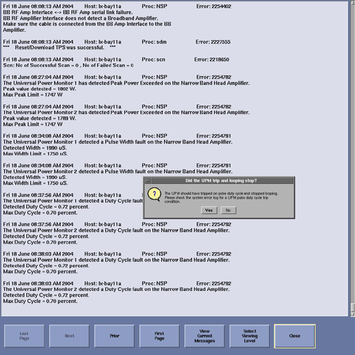
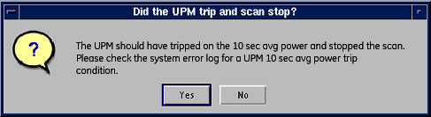

- 00000018WIA30F03E20GYZ
- id_131059753.0
- Aug 29, 2019 1:38:30 AM
UPM - Body and Head Functional Check
Prerequisites
| Required persons | Preliminary requirements | Procedure | Finalization |
|---|---|---|---|
| 1 | Not Applicable | 15 minutes | 5 minutes |
| Item | Quantity | Effectivity | Part number | Manufacturer |
|---|---|---|---|---|
| Power Measurement Kit (use Dummy Load listed below if using G1 Power Measurement Kit) | 1 | - |
46-317724G1 or G2 | - |
| 25 kW, 30 dB Attenuator (Dummy Load) - Use only with G1 Power Measurement Kit | 1 | - |
46-317724P14 | - |
| 50 ohm, 200 watt, 30 dB Attenuator (Dummy Load) - Use only if needed for G1 Power Measurement Kit | 1 | 1.5T |
46-317724P14 | - |
| RF Test Cables Kit - Use only with G1 Power Measurement Kit | 1 | 1.5T |
46-255816G1 | - |
| ||||
| Condition | Reference | Effectivity |
|---|---|---|
|
Properly calibrated RF head, body and MNS. | - | - |
About this task
The Universal Power Monitor (UPM) functional checks for 1.5T consist of these automated tests:
-
Peak Power
-
Pulse Width
-
Duty Cycle
All automated tests must pass to ensure the correct operation of the UPM system. Run both head and body UPM functional checks for the proper system type.
-
(For 1.5T) 1.5T Body UPM Functional Check.
- (For 1.5T)
1.5T Body UPM Functional Check
1.5T Body UPM Functional Check Setup
Procedure
- To inhibit TR faults, disable the driver module TR fault detection
in the RFS (RF in the System cabinet). Move Switch 2 to the TR Disable position.
Figure 1. Driver Module Front Switches 
- Remove the body Heliax cable from J4, and connect the RF dummy
load into J4.Note:
If the RF Max Power Out procedure was just completed, the configuration is the same. Leave the head RF Heliax cable disconnected, and the body output can keep the coupler (1.5T) and wattmeter (3.0T) in line. It will not change the outcome of the calibration.
Figure 2. Plug Dummy Load into J4, Body Out 
Setting Up Software Tool to Calibrate UPM - Body Forward Power
About this task
This tool must recognize a landmark. It is not necessary to have a body phantom in place or any scan parameter entered other than what is described below. Simply landmark on the cradle where the body phantom would be located.
Procedure
- From the Common Service Desktop:
- For the Class M service tool, select Calibration Wizard from the calibration menu, and Click here to start this tool. After the Calibration Wizard starts, select UPM Calibration (Head and Body) from the menu, review and okay the pre- and post-dependencies, and select Click here to start this tool. (May also start the tool under Class A/C mode shown next.)
- Select the Calibration tab.
- Select UPM Tool from the Calibration
menu, and Click here to start this tool.
Figure 3. UPM Main Screen 
- Click the Start button. When the message
shown below displays, click Yes if the body
coil is ready to go.
Figure 4. Body Coil Setup Confirmation 
- The UPM tool now takes full control, and runs the three functional
tests for the setup currently active.
-
The result of each test is compared against a specification file on the system, and the UPM status should indicate Pass/Fail.
-
During the tests, the user will be prompted three times as each test completes. Look in the error log to confirm that the tests completed successfully. The following illustrations are examples of pop-ups and error logs that should display.
Figure 5. Body Peak UPM Trip Question 
Figure 6. Error Log Example Showing Body Peak Trip 
Figure 7. Body Pulse Width Trip Question 
Figure 8. Error Log Example Showing Body Pulse Width Trip 
Figure 9. Body Pulse Duty Cycle Trip Question 
Figure 10. Error Log Example Showing Body Pulse Duty Cycle Trip 
Figure 11. Pass Message  Note:
Note:A TPS reset must be performed when testing is complete before scanning can resume.
-
1.5T Head UPM Functional Check
1.5T Head UPM Functional Check Setup
Procedure
- To inhibit TR faults, disable the driver module TR fault detection
in the RFS (RF in the System cabinet). Move switch 2 to the TR Disable position.
Figure 12. Driver Module Front Switches
Setting up Software Tool to Calibrate UPM – Head Forward Power
Procedure
- Click the Start button. When the message
shown below displays, click Yes if the head
coil is ready to go.
Figure 14. Head Coil Setup Confirmation 
- The UPM tool takes full control and runs the three functional
tests, and the UPM status should indicate Pass/Fail.
-
During the tests, the user will be prompted three times as each test completes. Look in the error log to confirm that the tests completed successfully.
-
The following illustrations are examples of pop-ups and error logs that should display.
Figure 15. UPM Looping Trips 
Figure 16. Looping Trip Error Log Example 
Figure 17. UPM Duty Cycle Loop Trip Figure 18. Duty Cycle Loop Trip Log Example 
Figure 19. UPM Head Pass Message 
-
3.0T Body UPM Functional Check
Setting Up Software Tool to Calibrate UPM – Body Forward Power
Procedure
- The user will be prompted when the test completes. Look in the error log to confirm that the test completed successfully, and a trip error occurred. The following illustrations are examples of the popup and error log that should display.
Figure 21. UPM 10-Second Average Power Trip 
Figure 22. UPM 10-Second Average Power Trip Error Log 
Supplemental UPM Checks
About this task
For troubleshooting purposes, the UPM functional check tool can be run using the system load setup shown in Figure 23. Note that a PASS result does not provide the required verification of UPM functionality, nor does a FAIL result indicate that the UPM or any other part of the transmit chain is faulty or out of specification using this setup.
Procedure
- Insert the head sphere and loader into the head coil as shown
below.
Figure 23. SPT Nesting Plate Setup 
Troubleshooting UPM
Procedure
- Solution 1:
- Check all cabling to the UPM components to make sure they are properly installed.
- Repeat the UPM functional test for the receive chain that failed (head or body).
- Solution 2:
- Cycle power to the UPM chassis.
- Reset TPS.
- Repeat the UPM functional test for the receive chain that failed (head or body).
- Solution 3: Reboot the system.
- Solution 4:
- Remove power from the UPM.
- Reset the processor module.
- Restore power to the UPM.
- Reset TPS.
- Repeat the UPM functional test for the receive chain that failed (head or body).
- Solution 5:
- Remove power from the UPM.
- Reset the detector boards.
- Restore power to the UPM.
- Reset TPS.
- Repeat the UPM functional test for the receive chain that failed (head or body).
- Solution 6:
- Check the processor module. (Problem could be that it is bad.)
- Remove power from the UPM.
- Replace the processor module.
- Restore power to the UPM.
- Reset TPS.
- Repeat the UPM functional test for the receive chain that failed (head or body).
- Solution 7:
- Check the detector boards. (Problem could be that one is bad.)
- Remove power from the UPM
- Replace both detector boards.
- Restore power to the UPM.
- Reset TPS.
- Repeat the UPM functional test for the receive chain that failed (head or body).
UPM Theory
About this task
The UPM calibration parameters found in the UPM calibration file (/export/home/signa/tools/upm.config) are used in the calibration/functional check program. The program code sets the digital attenuators in the UPM based on the results of the tests run and a comparison to these UPM calibration parameters.
-
The UPM calibration file is accessible within the UPM calibration tool from the File pull-down menu, Edit Config option. These values can be edited and saved during troubleshooting to perhaps understand where the power monitor is tripping. Before changing any parameter, make sure to select and run the Bkup UPM Cal option first to allow a return to the default values at any time.
-
A screen shot of the UPM calibration file (shown in Figure 24) contains the default configuration values for all of the UPM parameters. This illustration is for reference only, as the content and values will be different based on the system type and calibration results. (Use Restore Defaults on the Config File Editor GUI to get back to known default values.) The final UPM digital attenuator values are written to the UPM calibration configuration files (Upm1Cal.cfg, Upm1Cal.cfg, etc.) located in directory: w/config.
Procedure
- Any changes to these values are temporary, and can be quickly
restored by selecting the Restore Defaults button.
Figure 24. UPM Config Editor